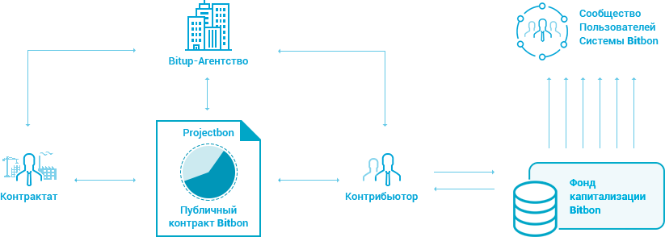
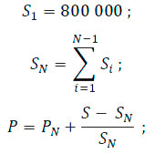

WHITE PAPER СИСТЕМЫ BITBON
Глобальная маркетинговая стратегияМир стремительно развивается, смена поколений технологий стала перманентным процессом, информационное пространство расширяется со скоростью, превышающей возможности аналитических инструментов. Эти тенденции приводят к снижению стабильности финансовых систем и, как следствие, к снижению надежности привычных финансовых инструментов, которые использовались для сохранения сбережений и долговременных инвестиций. Те же тенденции приводят к повышению сложности и стоимости привлечения инвестиций для бизнеса, так как традиционное привлечение инвестиций требует прохождение сложных и длительных (с целью понизить риски) процедур доказательства состоятельности бизнеса и его проектов. Общество и рынок в ответ на эти вызовы создали множество краудфандинговых платформ, но их очень быстро постигла участь традиционных инвестиционных институтов. Они либо прогорели, либо превратились в пирамиды, либо были настолько зарегулированы, что потеряли смысл. Причиной послужили те же проблемы доказательства состоятельности бизнеса и его проектов в современных информационных условиях.
Для исправления ситуации были использованы технологии Блокчейн. Криптовалюты на данный момент вполне убедительно показали возможность реализации финансовых систем на базе децентрализованных реестров. Более того, уже выработано несколько различных методов формирования консенсуса, такие как PoW, PoS, DPoS и другие. И эти методы продолжают совершенствоваться, повышая надежность и устойчивость децентрализованных систем. Казалось, что решение найдено. Было проведено и сейчас проводятся множество ICO (Initial Coin Offering). Но на сегодняшний день мы знаем много случаев мошенничества и жесткой реакции регуляторов на проведенные ICO. И тенденции показывают, что большинство идет тем же путем, который погубил краудфандинговые платформы первого поколения. Большинство решений на рынке пытаются предоставить услугу инвестирования с опорой на существующую инфраструктуру авторизации пользователей и защиту их от мошенничества. Чаще всего эти решения вступают в противоречие с законами какой-либо юрисдикции и, вместо того чтобы предложить легализацию инвестиционной деятельности, предлагают сменить юрисдикцию. Другими словами, ни одно из существующих решений не проектировалось как комплексный продукт, перед которым стоит задача не только обеспечить реализацию концепции демократического инвестирования, а обеспечить и создание инфраструктурных компонентов (не только цифровых, а коммерческих, социальных, регуляторных), которые обеспечат прозрачность, правовой статус и защиту инвестиционной деятельности.
Система Bitbon предлагает комплексное решение проблем инвестирования и привлечения инвестирования за счет следующих свойств:
- Абсолютная прозрачность за счет использования технологии Блокчейн.
- Полная легальность и персональная ответственность, которые достигаются путем:
- полной регистрации всех Пользователей, с обязательной верификацией документов, удостоверяющих личность;
- персонального рейтинга доверия для каждого Пользователя;
- Bitup-Агентств в каждой юрисдикции, защищающих интересы Пользователей;
- правовой природы Bitbon.
- Децентрализация и высокая устойчивость Системы обеспечивается следующими мерами:
- социальное управление Системой Bitbon;
- ноды Системы распределяются между Пользователями и Участниками Системы Bitbon. Предполагается развертывание нескольких сотен тысяч нод;
- открытость для государства и регуляторов;
- система вознаграждения Пользователей Системы Bitbon за предоставление собственных ресурсов для обеспечения функционирования Системы.
- Высокий уровень защиты за счет:
- использование технологии Блокчейн;
- хранение всех инвестиционных документов в открытом виде в Блокчейне (в том числе результаты аудитов проекта);
- каждый Пользователь имеет доступ ко всем документам инвестпроекта и рейтингу всех его Участников;
- сопровождение проектов Bitup-Агентствами:
- прошедшими сертификацию;
- с собственным рейтингом доверия, который зависит от успешности представляемых ими проектов;
- вносящими страховое обеспечение;
- хранение в Блокчейне приватных данных с высоким уровнем надежности;
- возможность восстановления доступа Пользователя к Системе Bitbon (потеря паролей, решение вопросов наследования и прочее);
- решение спорных вопросов между Участниками Системы Bitbon.
Одним из факторов создания Системы Bitbon является стремление сформировать Умное сообщество инвесторов (Контрибьюторов) и Операторов Системы Bitbon. Таким образом, будет создана среда для самоорганизации Умного сообщества, целью которого будет достижение лучшего использования ресурсов и сотрудничество без центральной власти. В область компетенции Умного сообщества Системы Bitbon входит:
- Определение стратегии развития Системы Bitbon.
- Введение новых и изменение существующих правил взаимодействия Участников Системы Bitbon с целью их усовершенствования.
- Разрешение спорных ситуаций между Участниками Системы Bitbon.
- Финансирование важных для сообщества проектов.
- Принятие решений в форс-мажорных ситуациях для оптимизации процессов в Системе Bitbon.
- Bitbon — это Криптоценность, которая базируется на целостной системе свойств и позволяет определить стоимость любого имущества, несет в себе организующий процесс, так как является ключевым компонентом Системы Bitbon, что позволяет каждому ее Пользователю выгодно и безопасно осуществлять свое право владеть и распоряжаться такой ценностью, в основу которой заложен потенциал развития глобальной социальной значимости во всех сферах общественной жизни.
- Контрибьютинг — это вид деятельности Пользователя Системы Bitbon, направленный на получение дополнительного дохода от участия в реализации выбранного бизнес-проекта по условиям и правилам Публичного контракта Bitbon данного проекта.
- Формирование индексов (групп Активов) и инвестирование в них, что обеспечит возможность инвесторам (Контрибьюторам) долговременно получать стабильную прибыль, а управляющим компаниям зарабатывать на управлении Активами.
- Децентрализованная биржа, позволяющая обменивать любые криптоактивы в Системе Bitbon как механизм определения их справедливой стоимости.
- Использование Bitbon для оплаты товаров и услуг как отдельными платежами, так и по подписке.
- Прогрессивные механизмы проведения аукционов и тендеров, управляемые Умными контрактами.
- Возможность для Пользователей запускать на своих вычислительных мощностях узлы сети, обеспечивая масштабирование и высокую надежность работы всей Системы, и получать за это вознаграждение.
- Система рейтингов как для всех Участников Системы Bitbon, так и для узлов сети.
- Единая дисконтная система.
- Возможность определить правила процессинга Bitbon до возникновения события с ограничением области применения Bitbon.
- Высокая масштабируемость за счет использования шардинга и оптимальной топологии сети, а также репликация данных на большом количестве узлов, обеспечивающая надежность хранения и доступ к данным в любой момент времени.
- Формально верифицируемые Умные контракты с поддержкой многоуровневой архитектуры с дальнейшим переходом к тьюринг-полным Умным контрактам, обеспечивающим высокую надежность и устойчивость к ошибкам в контрактах.
- Простота создания Умных контрактов благодаря использованию набора гибко конфигурируемых модулей и специально разработанному DSL (domain specific language) — языку программирования, максимально приспособленному к использованию в децентрализованной Блокчейн-среде.
- Система автоматического сегментированного обновления узлов сети с использованием механизмов консенсуса, что даст возможность быстро развивать сеть без потерь в надежности и скорости работы.
- Обмен шифрованными сообщениями между Пользователями внутри сети и поддержка механизмов маскировки трафика, минимизирующих возможность его статистического отслеживания.
- Хранение данных Пользователей и всех данных Системы на узлах сети с возможностью шифрования и управления доступом к этим данным.
- Поддержка приватных (закрытых) сегментов сети и групп доверенных узлов, что даст возможность использовать Систему даже в случаях повышенных требований к безопасности информации.
- Использование алгоритмов постквантовой криптографии для повышения безопасности данных и транзакций в сети.
- Использование в качестве алгоритма консенсуса улучшенной версии DPoS (Delegated Proof of Stake), учитывающей, кроме доли владения, также рейтинг участника сети.
Существующие схемы инвестирования имеют свои ограничения и недостатки, уменьшающие возможности инвестирования для очень многих потенциальных инвесторов во всех точках земного шара. Фондовые рынки превратились во многом больше в спекулятивный инструмент, с большой волатильностью и достаточно высокими издержками и порогом входа как для инвесторов, так и для тех, кто хочет привлечь инвестиции. Усложняет ситуацию также и чрезмерная зарегулированность этой сферы экономики. Краудфандинговые площадки представляют довольно ограниченный сектор инвестиций в основном в небольшие и краткосрочные проекты без каких-либо методик оценки проектов и ограниченным доступом для желающих привлечь инвестиции. Все это приводит к тому, что резиденты большинства государств не могут воспользоваться этой возможностью.
В свою очередь механизмы ICO, предлагающие широкие возможности по охвату аудитории как инвесторов, так и желающих привлечь инвестиции (большая часть государств не запрещает ICO, хотя и имеет или планирует ввод определенных ограничений), в то же время не предлагают никаких способов противодействия мошенничеству и конкретных моделей получения прибыли от подобных инвестиций. Инвестирование через механизм DAO (децентрализованных автономных организаций), призванный решить проблемы ICO, имеет свои ограничения и риски, связанные с уязвимостями смарт-контрактов и сомнительной эффективностью предлагаемой модели управления проектами: принятие решений большой неорганизованной группой никак не связанных друг с другом лиц. Кроме того, ввести в заблуждение инвесторов в такой модели хоть и несколько сложнее, чем в традиционном ICO, но тоже не составляет труда по причине отсутствия каких-либо стандартов отчетности и ограниченных возможностей ее проверки.
В то же время сам принцип децентрализованного управления на базе жестко прописанных в коде программной системы правил показал свою работоспособность на примере работы криптовалют и является весьма перспективным направлением для использования во всех сферах, включающих в первую очередь сферу экономических взаимоотношений, в частности, в такой важнейшей области, как инвестирование. Процесс инвестирования в Системе Bitbon называется Контрибьютинг. Предлагаемая модель (Контрибьютинг) позволяет устранить недостатки вышеперечисленных систем, выстроить прозрачную, понятную и предсказуемую модель инвестиций, обеспечить заинтересованность всех участников процесса в качественном исполнении своих обязательств. Четкое разделение ролей участников процесса позволяет профессионалам в своих областях выполнять свойственные им функции, что существенно повышает эффективность Системы в целом и позволяет получить высокую прибыльность и быстрый возврат инвестиций. Применение децентрализованной автоматизированной системы позволит кардинально сократить издержки в процессе запуска новых проектов, привлечения в них инвестиций, выбора инвесторами интересующих их проектов, справедливого распределения прибыли и обеспечения всего жизненного цикла инвестиции в целом.
Кроме того, предлагаемое техническое решение обеспечит высокую доступность и надежность работы Системы в целом, безопасность хранящихся в Системе данных, мгновенный контроль корректности всех транзакций. Использование интеллектуальных алгоритмов балансировки и распределения нагрузки обеспечит высокую масштабируемость и скорость работы Системы, ограниченную только аппаратными возможностями мировой компьютерной сети. Новая модель многоуровневой архитектуры Умных контрактов и использования для их создания стандартного набора гибко конфигурируемых логических модулей обеспечит простоту и скорость разработки с одновременным повышением надежности и эффективности их работы, а также существенно упростит поиск ошибок, возникающих при их реализации, и минимизирует возможные последствия от этих ошибок.
Контрибьютинг — это модель инвестирования в рамках Системы Bitbon, центральной частью которой являются правовые отношения, которые закрепляются Публичными контрактами Bitbon конкретных проектов, содержащими в стандартизированном виде информацию по бизнес-проектам, под которые привлекаются средства. В эту информацию входит планируемая сумма привлекаемых средств, этапы выполнения проекта и суммы по этапам, правила и сроки распределения прибыли и другие правила и условия.  Участниками процесса Контрибьютинга являются:
- Контрактат — это компания (юридическое лицо, зарегистрированное и функционирующее в соответствии с требованиями юрисдикции, налогоплательщиком которой оно является) или физическое лицо, то есть человек, участник гражданских и других правоотношений (носитель прав и обязанностей), является инициатором создания Публичного контракта Bitbon собственного проекта, который принимается в Систему Bitbon на основании допуска Bitup-Агентством к IBO.
- Контрибьютор — это Пользователь Системы Bitbon, который для получения выгоды определенной величины от Контрибьютинга обменивает имеющиеся у него Bitbon на Projectbon и тем самым участвует в реализации выбранного бизнес-проекта.
- Bitup-Агентство — это Участник Системы Bitbon, которому в Системе Bitbon предоставлено право принимать решение о допуске проекта Контрактата к IBO и осуществлять его сопровождение в Системе Bitbon по условиям и правилам Публичного контракта Bitbon конкретного проекта, представляя и защищая интересы Контрибьюторов.
- Фонд капитализации Bitbon — это компонент Системы Bitbon, целью которого является предоставление механизма, позволяющего Пользователям Системы Bitbon непосредственно управлять Системой Bitbon в интересах всех ее Участников для увеличения объема Капитализации Bitbon, который формируется посредством автоматического Контрибьютинга Фонда капитализации Bitbon.
Этапы Контрибьютинга можно разделить на четыре базовых процесса 1. Процесс IBO В данном процессе принимают участие Контрактат, Bitup-Агентство и Контрибьюторы. Как только Bitup-Агентство публикует Публичный контракт Bitbon конкретного проекта — начинается IBO. Завершением процесса считается момент определения Контрибьюторами своих долей в размере 100% от общего количества Projectbon данного бизнес-проекта. 2. Процесс Контрибьютинга Пользователей Системы Bitbon После обмена Контрибьюторами своих Bitbon на Projectbon, данные Bitbon автоматически переводятся в Masterbox конкретного проекта до момента завершения процесса IBO. 3. Процесс выполнения Контрактатом условий Публичного контракта Bitbon. Реализация бизнес-плана в полном объеме Данный процесс характеризуется поэтапной реализацией Контрактатом своего бизнес-проекта, а также выполнением Контрактатом своих обязательств согласно правилам и условиям Публичного контракта Bitbon данного проекта. Полученная от действий Контрактата дополнительная прибыль фиксируется как финансовый результат и далее распределяется между Контрактатом и Контрибьюторами. 4. Процесс Капитализации Bitbon Согласно автоматическому Контрибьютингу Фонда капитализации Bitbon (далее — Фонд) в Projectbon разных проектов, поступающая прибыль на Assetbox Фонда, выраженная в Bitbon, используется для участия Фонда в реализации других бизнес-проектов посредством Projectbon. Таким образом, осуществляется сам процесс Капитализации Bitbon.
1 Контрактат инициирует создание Публичного контракта Bitbon собственного проекта. 2 Bitup-Агентство принимает решение о допуске проекта Контрактата к IBO и осуществляет его сопровождение в Системе Bitbon по условиям и правилам Публичного контракта Bitbon данного проекта. 3 Публикация Публичного контракта Bitbon с целью привлечения средств для реализации бизнес-проекта посредством Projectbon. 4 Покупка Контрибьютором Bitbon. 4.1 Определение Контрибьютором своей доли в бизнес-проекте путем обмена Bitbon на Projectbon данного проекта. 5 Фонд капитализации Bitbon посредством автоматического Контрибьютинга в обязательном порядке осуществляет выпуск Bitbon на разницу суммы, которая соответствует определенному количеству заявленных Projectbon, для начала реализации условий Публичного контракта Bitbon. 6 Передача в Masterbox конкретного проекта Bitbon, которые были получены от Контрибьюторов и Фонда капитализации Bitbon, для дальнейшего их обмена на бирже на требуемую валюту с целью произведения необходимых действий, согласно правилам и условиям Публичного контракта Bitbon данного проекта. 7 Этапы реализации бизнес-проекта согласно условиям, описанным в Публичном контракте Bitbon. Все действия по переводу Bitbon с Masterbox на Assetbox в обязательном порядке подтверждаются цифровыми ключами доступа, которые были сгенерированы Системой Bitbon по результатам IBO и предоставлены Контрактату и Bitup-Агентству. Данные цифровые ключи могут использоваться только одновременно согласно правилам и условиям, указанным в Публичном контракте Bitbon конкретного бизнес-проекта. 8 Финансовый результат в виде дополнительной прибыли, полученной от действий Контрактата, согласно условиям Публичного контракта Bitbon. 9 Согласно Публичному контракту Bitbon данного бизнес-проекта, часть полученной прибыли в валюте переводится в Bitbon через биржу для выполнения обязательств Контрактата перед Контрибьюторами и Фондом капитализации Bitbon. 9.1 Перевод Bitbon с биржи на Assetbox Контрактата с последующим переводом данных Bitbon на Masterbox конкретного проекта с целью распределения Bitbon на персональные Assetbox Контрибьюторов согласно их долям в Projectbon. 9.2 Получение Контрибьюторами своей выгоды, выраженной в Bitbon, согласно их долевому участию в Projectbon. 9.3 Распределение прибыли в Assetbox Фонда капитализации Bitbon согласно его долевому участию в Projectbon. Поступившие в виде прибыли Bitbon далее направляются на реализацию и развитие других проектов, доли которых выражены в >Projectbon. Таким образом, происходит Капитализация Bitbon. 10 Часть полученной прибыли в валюте остается у Контрактата согласно условиям Публичного контракта Bitbon.
- 2015–2017 Концепция развития Системы Bitbon
- Определена фундаментальная концепция и стратегия развития Системы Bitbon
- Сформулированы основные термины и определения, которые легли в основу модели взаимодействия всех Участников Системы Bitbon и механизмов, обеспечивающих работу ее компонентов
- Для технической реализации выбрана технология Блокчейн
- Начало регистраций авторских прав и торговых марок на ключевые компоненты Системы Bitbon
- Переход к практическому воплощению поставленных задач
Работы по данному этапу завершены.
- 2018 Запуск Системы Bitbon
Основной задачей этого этапа развития является реализация базовых механизмов и правил Системы Bitbon, а также построения на их базе транзакционной среды в минимальные сроки.
- 1 этап запуска Биржи Цифровых Активов Bit Trade. Покупка Bitbon по правилам первичной эмиссии (ограниченный выпуск)
- Запуск мобильного приложения Bitbon Space (глобальные и технические новости)
- 2 этап развития Биржи Цифровых Активов Bit Trade (свободная покупка и продажа Bitbon)
На этом этапе произойдет первичный выпуск, согласно Положению 3 Публичного контракта Системы Bitbon, целью которого является формирование первичного рынка ликвидности, что позволит начать производить первые взаимодействия с реальным сектором экономики. Все операции с Bitbon будут выполняться со ставкой комиссии, равной 0. Децентрализация сети будет повышаться за счет размещения нод Системы Bitbon на площадках доверенных партнеров и первых Bitup-Агентств на базе существующих финансовых институтов (банки, биржи, крупные брокеры и аудиторские компании). Первичное размещение Bitbon приведет к резкому росту и высокой волатильности, которые начнут сменяться на умеренный рост после выпуска первых Projectbon.
- 2019 Формирование инфраструктуры
Основная цель данного этапа — массовое распространение инвестиционной практики Контрибьютинга. Основными способами достижения этой амбициозной цели мы видим формирование сообщества инвесторов и создание сети Bitup-Агентств по всему миру, их методическое и техническое обеспечение, обучение и сертификация.
- Управление своими Bitbon из мобильного приложения Bitbon Space
- Запуск системы подготовки и лицензирования Bitup-Агентств
- Электронные Личные Кабинеты для Bitup-Агентств и Контрактатов
- Первые Публичные контракты Bitbon (начало взаимодействия с реальным сектором экономики)
- Расширение функций мобильного приложения Bitbon Space в части управления своими бизнес-проектами посредством Projectbon
Развитие технической инфраструктуры позволит обеспечить высокий уровень надежности за счет увеличения степени децентрализации путем увеличения количества нод Системы Bitbon до 1000 и более. Повышение уровня публичности данных приведет к повышению рейтинга доверия к Системе и, как следствие, послужит дополнительным драйвером для распространения практик Контрибьютинга. Рост объемов Контрибьютинга приведет к повышению востребованности Bitbon и ранее выпущенных Projectbon, а следовательно, к их удорожанию.
- 2020 Расширение инфраструктуры
Цель данного этапа — экспансия Системы Bitbon во все отрасли экономики и развитие Умного сообщества инвесторов и Операторов Системы Bitbon.
- Перевод инфраструктуры Системы Bitbon с приватного Блокчейна Ethereum на публичный Блокчейн Simcord с возможностью индивидуального майнинга
- Интеграция торговых сетей в Систему Bitbon
- Запуск на базе мобильного приложения Bitbon Space глобальной дисконтной системы, объединяющей разные сферы бизнеса в одну общую систему накопительных скидок и бонусов
- С целью достижения полной децентрализации Системы Bitbon будет произведено расширение возможности индивидуального майнинга Участниками Системы Bitbon за счет использования вычислительных ресурсов, пропускной способности каналов Интернет и объема выделенного дискового пространства для хранения информации Блокчейна Simcord.
Рост котировки Bitbon, децентрализация, прозрачная модель, наличие центров ответственности и защиты Участников Системы Bitbon приведет к расширению как сообщества и сети Bitup-Агентств, так и технической инфраструктуры за счет индивидуального майнинга на свободных ресурсах Пользователей. Будут сформированы приватные подсети узлов для хранения конфиденциальной и защищенной информации. В 2020 году стремительно начнет расти доход от Контрибьютинга и, как следствие, капитализация Bitbon в целом.
- 2021–2025 Глобализация
Этот этап посвящен интеграции Системы Bitbon в существующие системы и продукты на всех уровнях, а также выходу на новые и развивающиеся рынки.
- Объединение всех Участников Системы Bitbon в единую бизнес-ориентированную сеть нового поколения
- Запуск социальных накопительных программ с целью обеспечения достойного уровня жизни с гарантированным доходом
- Создание единой глобальной системы покупки и продажи товаров и услуг на базе Блокчейна Simcord
Со временем Система Bitbon будет использоваться в разных сферах:
- Финансово-инвестиционная платформа с множеством различных производных финансовых инструментов (боны, деривативы, индексы) и множеством торговых площадок (в том числе децентрализованных).
- Система накопительных и страховых инвестиций.
- Глобальная система макро- и микроплатежей и взаиморасчетов.
- Распределенная система учета различных статистических показателей и распределенного вычисления метрик.
- Глобальная система скидок и бонусов.
- Платформа для выпуска локальных криптовалют (сообществ, компаний, корпораций, регионов, стран).
- Безопасный мессенджер с возможностями обмена сообщениями.
- Бизнес-ориентированная социальная сеть.
- Настраиваемый и модерируемый информационный пул.
- Бесперебойное распределенное высоконадежное хранилище приватной и публичной информации.
- Всегда доступный сервер идентификации и авторизации.
- Глобальный рейтинг Пользователей и их компетенций.
- Платформа для размещения Пользователями Системы Bitbon коммерческих и бесплатных сервисов.
imcord — компания с историей (https://www.simcord.com/ru/istoriya) и репутацией. Сегодня можно сказать, что концепция применения научного подхода к работе на финансовых рынках обеспечила правильное развитие Компании. Базовые цели и принципы демократизации инструментов для работы на финансовых рынках позволили пройти путь от идей финансовых стратегий до холдинга, который производит собственные программные продукты и использует собственную инфраструктуру финансовых продуктов, разделяя прибыль с Клиентами Компании. Использование компонента социальной инженерии и сети Информационно-Тренинговых Центров позволило создать собственные ниши рынков вместо конкуренции на переполненных сегментах финансовых рынков. Естественным развитием продуктовой линейки, в соответствии с принципами Компании о демократизации и либерализации финансовых инструментов, была разработка концепции Системы Bitbon. Для ее реализации планируется использовать новые версии существующих продуктов Компании, а также разработать Блокчейн нового поколения.
Экспертиза Компании достаточно обширна и включает в себя следующие технологические направления:
- Сбор, консолидация и обработка больших массивов данных в реальном масштабе времени (Big Data).
- Многомерный анализ данных на выборках различной глубины и формирование полей фактов для систем принятия решений.
- Функциональные и интеллектуальные системы принятия решений и формирование управляющих сигналов.
- Системы и сети распределенных вычислений.
- Высоконагруженные системы (High load).
- Системы защиты информации и предотвращения мошенничества (Fraud detection, IPS).
- Клиентские и клиент-серверные мультиплатформенные приложения.
- JS web-приложения.
- Системы авторизации и аутентификации Пользователей, в том числе хранилища персональных данных Пользователей.
- Приложения обеспечения трейдинга на крипто- и финансовых рынках.
- Приложения управления портфелями инвестиций.
- Системы автоматизированной отчетности перед регуляторами.
Компания Simcord также имеет серьезные наработки в области организации эксплуатации программных продуктов и организации легальной инвестиционной деятельности на базе этих продуктов в различных юрисдикциях. Сотрудниками Компании накоплен бесценный опыт вывода финансовых продуктов на региональные рынки и организации работы Клиентов таким образом, чтобы фискальные органы данных юрисдикций не имели претензий. Компания абсолютно прозрачна для государственных органов и регуляторов локальных рынков. Множество пройденных аудитов с помощью таких партнеров как Deloitte, KPMG, PWC, соответствие критериями MIFID II (ESMA), организация ежедневного репортинга о проведенных торговых сделках посредством EMIR reporting (ESMA), а также наличие действующих лицензий позволяют утверждать, что у Компании имеется достаточный опыт для обеспечения легального использования Системы Bitbon.
Торгово-аналитическая платформа iPro Marketplace iPro Marketplace — торгово-аналитическая платформа, отличающаяся гибким и интуитивно понятным интерфейсом, в котором воплощены комплексные функциональные возможности и уникальные решения. Платформа включает набор программных компонентов (анализ рынка, отчеты торговли, разработка, тестирование и запуск торговых стратегий), благодаря которым торговля на финансовых рынках становится простой и максимально эффективной как на компьютере, так и на мобильных устройствах. Система контроля и управления финансовыми транзакциями Система контроля и управления финансовыми транзакциями (FCMS) обеспечивает возможность зачисления и перевода денежных средств Клиентов через взаимодействие с международными платежными системами. Функциональность приложения позволяет проводить обработку финансовых транзакций, выполнять мониторинг движения средств, осуществлять контроль финансовых транзакций, отслеживать подозрительную финансовую активность, формировать финансовую отчетность для регуляторов. Account Management System Account Management System — адаптивная система верификации Клиентов, позволяющая автоматизировать процесс обработки данных. Основное назначение системы — хранение и управление учетными записями с гарантированной безопасностью проводимых операций, а также поддержкой международных стандартов AML (Anti-Money Laundering). Система SSO (SUPPORT SYSTEM OPERATOR workplace) Система SSO позволяет автоматизировать бизнес-процессы в отделах клиентской поддержки и call-центрах. Программный продукт предназначен для обеспечения результативного взаимодействия с Клиентами, а также их информационного и консультационного сопровождения. Liquidity Management System Система управления ликвидностью (LMS) предназначена для агрегирования ликвидности на финансовом рынке и рынке криптовалют. Это высокотехнологичная система, рассчитанная на сбор информации о ценах и объемах торговли от различных поставщиков ликвидности, таких как биржи криптовалют или брокеры и банки валютного рынка, и принятии решений о выводе торговых приказов на того или иного поставщика с минимальными задержками.
Цели и задачи, которые определила компания Simcord для возможности формирования современного Умного сообщества по принципам технологического и социального прогресса, требовали создания документа, представляющего собой основной вектор развития Системы Bitbon. Таким документом является Публичный контракт Системы Bitbon. По сути Публичный контракт Системы Bitbon является основополагающим документом, который обладает высшей юридической силой и регулирует взаимоотношения между Участниками Системы Bitbon. В Публичном контракте Системы Bitbon обозначены цели Системы Bitbon, закреплены основы ее развития, определены правила и условия взаимодействия всех Участников Системы Bitbon, выраженные в Положениях и отдельных Приложениях, являющихся неотъемлемой частью данного Соглашения. Ознакомиться с Публичным контрактом системы Bitbon можно, перейдя по ссылке https://www.bitbon.space/ru/publichnyy-kontrakt-sistemy-bitbon
(на период 1 этапа запуска Биржи Цифровых Активов Bit Trade)
На основании Положений 3, 4 и 5 Публичного контракта Системы Bitbon компанией Simcord была выбрана стратегия развития Системы Bitbon и распространения Bitbon с целью организации и автоматизации технологического взаимодействия между всеми Участниками Системы Bitbon путем обеспечения доступа всех Участников Системы Bitbon к единому цифровому пространству и всех необходимых инструментов для ведения деятельности в рамках Системы Bitbon. Таким образом, компанией Simcord была определена политика ценообразования Bitbon на период первого этапа старта Bit Trade. Это значит, что с 10 октября 2018 года будет действовать принцип рыночного ценообразования. Из этого следует, что в течение первого этапа старта Биржи Цифровых Активов Bit Trade (www.bit.trade), в период до 10 октября 2018 года, предоставлена возможность купить Bitbon по цене, которая определяется специальной формулой и рассчитывается в онлайн-режиме в зависимости от количества купленных Bitbon:  где: S1 — базовое количество Bitbon для первого уровня исходя из стоимости 1 Bitbon = 1 доллару США, N — уровень ценообразования Bitbon, SN — количество Bitbon N-го уровня, S — текущее количество всех купленных Bitbon, P — текущая цена Bitbon, PN — базовая цена N-го уровня. Для каждого последующего уровня количество Bitbon, которые будут распространены на этом уровне, равно количеству Bitbon, купленных на всех предыдущих уровнях. Так, для уровня 2 количество составит 800 000, для уровня 3 количество будет равно 1 600 000, а для четвертого 3 200 000 и так далее. На каждом уровне цена Bitbon линейно возрастает от базовой цены уровня (для 1 уровня — базовая цена 1 доллар США, для 2 уровня — цена 2 доллара США и так далее) до базовой цены следующего уровня, в зависимости от количества Bitbon, распространенных на данный момент. Такой подход к определению стоимости Bitbon на первом этапе запуска Системы Bitbon обоснован стремлением наделить цену Bitbon максимальной устойчивостью и потенциалом к росту на втором этапе ценообразования Bitbon рыночным способом.
Одной из главных целей компании Simcord, определенных на период сразу же после запуска Системы Bitbon, является формирование первого Умного сообщества Системы Bitbon. К этой задаче Компания подходит с большой ответственностью, так как в область компетенции Умного сообщества Системы Bitbon входят важнейшие ключевые функции, среди которых финансирование важных для сообщества проектов, а также введение новых и изменение существующих правил взаимодействия Участников Системы Bitbon с целью их усовершенствования. Таким образом, для развития Системы Bitbon в данный период Компания планирует объединение более 100 000 000 Пользователей Системы Bitbon в первое Умное сообщество, которое будет использовать Систему Bitbon посредством предоставленных механизмов и сервисов в разных сферах деятельности — от обмена расчетных средств и бизнес-ориентированной социальной сети нового поколения до Контрибьютинга. Для формирования благоприятной среды образования автономного Умного сообщества Пользователей и популяризации Системы Bitbon в целом компанией Simcord разработана масштабная рекламная стратегия мирового уровня, проводимая в три базовых этапа, первый из которых будет проводиться на русском и английском языках с июня по октябрь 2018 года на более чем 10 крупных рекламных площадках, посвященных криптоиндустрии.
Первый этап
В связи с вышеизложенным на 1-м этапе планируется привлечь в Систему Bitbon от 100 000 до 300 000 активных Пользователей. Соответственно, до 10 октября 2018 года включительно будет действовать предложение о вознаграждении Промоутеров Bitbon в размере от 10% до 15% от суммы продажи Bitbon. Данное вознаграждение доступно только посредством использования механизмов, предусмотренных на Бирже Цифровых Активов Bit Trade (www.bit.trade). При этом на 1-м этапе реализации глобальной маркетинговой стратегии Компания оставляет за собой право определять способы и критерии для начисления этого вознаграждения. Обращаем внимание, что комиссия в размере до 15% будет действовать до начала 2-го этапа.
Второй этап
На 2-м этапе, начиная с 10 октября 2018 года, будет установлено вознаграждение в размере 10% от суммы продажи Bitbon за счет продавца Bitbon в пользу Промоутеров Bitbon. При этом выпуск Bitbon из Фонда капитализации Bitbon, на основании Положения 5 Публичного контракта Системы Bitbon, осуществляться не будет, что по сути означает обращение в Системе такого количества Bitbon, которое было определено на 1-м этапе глобальной маркетинговой стратегии в соответствии с Положением 4 Публичного контракта Системы Bitbon. С целью расширения Умного сообщества на 2-м этапе глобальной маркетинговой стратегии до 10 000 000 Пользователей Системы Bitbon и более предусматривается следующее: Перевод всех официальных информационных ресурсов Системы Bitbon на английский, немецкий, французский, испанский, украинский и казахский языки. Увеличение количества крупных рекламных площадок, посвященных криптоиндустрии, до 50. Подключение через API-интерфейсы (Application Programming Interface — программный интерфейс приложения) различных биржевых площадок и создание новых. Для поддержки интенсивного развития Системы Bitbon на период всего 2-го этапа глобальной маркетинговой стратегии Участники Системы Bitbon в статусе Промоутера Bitbon — биржевые площадки — в процессе открытых торгов с продавцов Bitbon будут взимать комиссию в размере не менее 10% в свою пользу или в пользу своих партнерских программ. Обращаем внимание, что комиссия в размере не менее 10% будет действовать до начала 3-го этапа, о начале которого будет сообщено в новости, опубликованной на официальных информационных ресурсах Системы Bitbon.
Третий этап
С целью расширения Умного сообщества на 3-м этапе глобальной маркетинговой стратегии до 100 000 000 Пользователей Системы Bitbon и более предусматривается следующее: Старт Контрибьютинга в Системе Bitbon в соответствии с Положением 23 Публичного контракта Системы Bitbon. Добавление переводов всех официальных информационных ресурсов Системы Bitbon на польский, румынский, венгерский, китайский, малайский, индонезийский, японский, арабский и корейский языки, что в целом составит 16 основных языковых групп с общим охватом носителей на планете — 4 831 000 000 (4 миллиарда 831 миллион). Увеличение общего количества рекламных площадок, посвященных криптоиндустрии и Контрибьютингу в целом, до 10 000 и более за счет прямой рекламы и естественного расширения на базе стратегии Промоутеров Публичных контрактов Bitbon согласно Положению 47 Публичного контракта Системы Bitbon. Расширение предоставления комплексных программных решений на базе API-интерфейсов (Application Programming Interface — программный интерфейс приложения), которые откроют возможность подключения банков для проведения эквайринга платежей, расширят возможности бирж для участия в Контрибьютинге, в проведении IBO (Initial Business Offering — первичное бизнес-предложение) и торговых учреждений, используя все преимущества технологии Блокчейн в новой цифровой экономике. Следовательно, на 3-м этапе глобальной маркетинговой стратегии и на всем остальном периоде развития Системы Bitbon в целом станет доступна возможность получения Биржами и/или Промоутерами Публичных контрактов Bitbon и их партнерскими программами в отдельности на базе Контрибьютинга нового вида вознаграждения. Данное вознаграждение будет устанавливать Контрактат в пользу Бирж и/или Промоутеров Публичных контрактов Bitbon на основании Положения 48 Публичного контракта Системы Bitbon в зависимости от вида бизнеса, в который привлекаются средства в соответствии с классом Публичного контракта Bitbon конкретного проекта в размере до 30% от суммы привлеченных средств с целью реализации бизнес-проекта Контрактатом.
Глобальные перспективы
Базовые этапы глобальной маркетинговой стратегии, заложенные в Систему Bitbon, определяют колоссальный технологический и социальный потенциал, тем самым предоставляя компании Simcord уверенность в реализации поставленных задач, среди которых можно выделить следующие:
- Самоорганизация Умного сообщества, целью которого будет достижение лучшего использования ресурсов.
- Прогрессивные инструменты и механизмы, обеспечивающие абсолютную прозрачность процессов в Системе Bitbon.
- Бесперебойное распределенное высоконадежное хранилище приватной и публичной информации.
- Интеграция торговых сетей в Систему Bitbon и создание единой глобальной системы покупки и продажи товаров и услуг на базе Блокчейна Simcord.
- Запуск на базе мобильного приложения Bitbon Space глобальной дисконтной системы, объединяющей разные сферы бизнеса в одну общую систему накопительных скидок и бонусов.
- Запуск социальных накопительных программ с целью обеспечения достойного уровня жизни с гарантированным доходом.
- Запуск на базе мобильного приложения Bitbon Space безопасного мессенджера с возможностями обмена сообщениями с элементами социальной сети.
- Развитие инфраструктуры за счет экспансии Системы Bitbon во все отрасли экономики.
На сегодняшний день развитие Системы Bitbon имеет исключительную интенсивность и нарастающий характер, что обусловлено поддержкой во многих странах мира на разных континентах. К Системе Bitbon присоединяются все больше единомышленников — людей, которые осознают реальные преимущества решений компании Simcord, реализованные на базе технологии Блокчейн и возможностей Системы Bitbon.